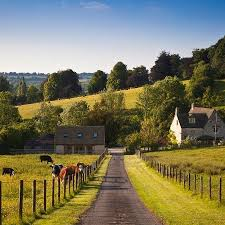

Conexão Campo x Cidade

 A conexão campo-cidade é uma via de mão dupla essencial: o campo fornece alimentos e matérias-primas, enquanto a cidade oferece serviços, tecnologia e infraestrutura. Essa interdependência gera um fluxo constante de pessoas e bens, mas também impõe desafios como o êxodo rural. Gerenciar essa relação de forma sustentável é crucial para o desenvolvimento.
A conexão campo-cidade é uma via de mão dupla essencial: o campo fornece alimentos e matérias-primas, enquanto a cidade oferece serviços, tecnologia e infraestrutura. Essa interdependência gera um fluxo constante de pessoas e bens, mas também impõe desafios como o êxodo rural. Gerenciar essa relação de forma sustentável é crucial para o desenvolvimento.